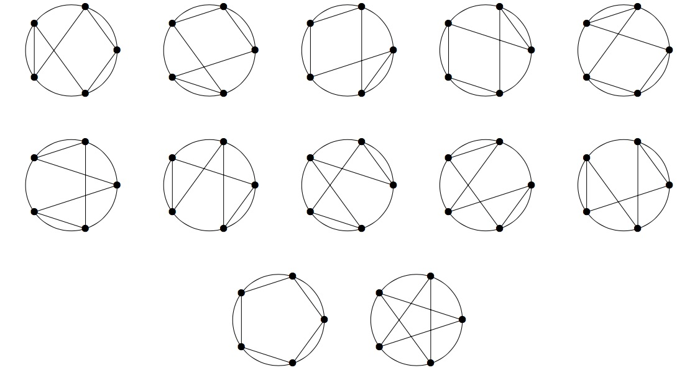

Project Euler 842
Project Euler 842
题目
Irregular Star Polygons
Given \(n\) equally spaced points on a circle, we define an \(n\)-star polygon as an \(n\)-gon having those \(n\) points as vertices. Two \(n\)-star polygons differing by a rotation/reflection are considered different.
For example, there are twelve \(5\)-star polygons shown below.

For an \(n\)-star polygon \(S\), let \(I(S)\) be the number of its self intersection points.
Let \(T(n)\) be the sum of \(I(S)\) over all \(n\)-star polygons \(S\).
For the example above \(T(5) = 20\) because in total there are \(20\) self intersection points.
Some star polygons may have intersection points made from more than two lines. These are only counted once. For example, \(S\), shown below is one of the sixty \(6\)-star polygons. This one has \(I(S) = 4\).
You are also given that \(T(8) = 14640\).
Find \(\displaystyle \sum_{n = 3}^{60}T(n)\). Give your answer modulo \((10^9 + 7)\).
解决方案
任何自交点都来自两条（或多条）弦在内部相交；而所有可能的弦都属于完全图 \(K_n\) 的连线（边界边不会在内部与其他边相交）。因此可以先研究“正 \(n\) 边形所有对角线的交点集合”。
把一个内部交点记为 \(P\)。设恰有 \(k\) 条对角线通过 \(P\)（\(k\ge 2\)），并且这些对角线两两都在 \(P\) 相交。对某个多边形 \(S\)，点 \(P\) 会被计入 \(I(S)\) 当且仅当 \(S\) 的边集中包含了至少两条经过 \(P\) 的对角线；即在这 \(k\) 条对角线里，\(S\) 选中了 \(\ge 2\) 条。
于是 \[ T(n)=\sum_{P}\#\{S:|\mathcal{D}(P)\cap E(S)|\ge 2\}. \]
其中 \(\mathcal{D}(P)\) 表示所有经过交点 \(P\) 的对角线集合，\(E(S)\) 表示多边形 \(S\) 的边集合。
因此关键变成两个问题：
- 对给定的 \(k\)，求 一个 \(k\)-重交点对 \(T(n)\) 的贡献 \(A(k,n)\)；
- 对每个 \(n\)，求内部交点里“恰有 \(k\) 条对角线共点”的点数 \(a_k(n)\)。
先做一个基本计数：给定 \(r\) 条两两不共享端点的边（这里是对角线），问有多少个 \(n\)-star polygon（无向哈密顿圈）包含它们全部？可见，将每条必选边 \({u_i,v_i}\) 收缩成一个“超点”，则顶点数从 \(n\) 变为 \(n-r\)。在收缩后的图上，一个无向哈密顿圈数为 \(\dfrac{(n-r-1)!}{2}\)。展开回原图时，每条收缩边在圈中有两种穿越方向（\(u_i\to v_i\) 或 \(v_i\to u_i\)），独立给出 \(2^r\) 倍。故包含这 \(r\) 条边的 \(n\)-star polygon 数为 \[ F(r,n)=2^r\cdot \frac{(n-r-1)!}{2}=2^{r-1}(n-r-1)!. \] 接下来会用到：若一个交点 \(P\) 上有 \(k\) 条对角线，则任取其中 \(r\) 条，端点必然互不重合（否则会在顶点处相交而不是内部相交），因此上式适用。
固定一个交点 \(P\)，设通过它的对角线集合为 \(\mathcal{D}\)，且\(|\mathcal{D}|=k\)。
对一条多边形 \(S\)，设它选中了其中 \(s\) 条对角线（\(0\le s\le k\)）。我们希望这个点对 \(S\) 的贡献是\(\displaystyle{w(s)=\begin{cases}0,& s=0,1,\\1,& s\ge 2.\end{cases}}\)
我们构造一个恒等式是：对所有整数 \(s\ge 0\)，有\(\displaystyle{\mathbf{1}\{s\ge 2\}=\sum_{r=2}^{s}(-1)^r(r-1)\binom{s}{r}.}\)验证很直接：令\(\displaystyle{S_0(s)=\sum_{r=0}^s(-1)^r\binom{s}{r}=(1-1)^s,S_1(s)=\sum_{r=0}^s(-1)^r r\binom{s}{r}= s(1-1)^{s-1}.}\)
则当 \(s\ge 2\) 时 \(S_0(s)=S_1(s)=0\)，整理\(\displaystyle{\sum_{r=2}^s(-1)^r(r-1)\binom{s}{r}=\Big(\sum_{r=0}^s(-1)^r r\binom{s}{r}\Big)-\Big(\sum_{r=0}^s(-1)^r\binom{s}{r}\Big)+1=1.}\)而 \(s=0,1\) 时左侧为空和为 \(0\)，恒等式成立。
因此，点 \(P\) 对 \(T(n)\) 的总贡献为\(\displaystyle{A(k,n)=\sum_{S} w(s(S))=\sum_{S}\sum_{r=2}^{s(S)}(-1)^r(r-1)\binom{s(S)}{r}.}\)交换求和并按“选择哪 \(r\) 条对角线都对称”：\(\displaystyle{A(k,n)=\sum_{r=2}^{k}(-1)^r(r-1)\binom{k}{r}\cdot F(r,n).}\)代入上面的 \(F(r,n)=2^{r-1}(n-r-1)!\)，得到关键公式：
\[ A(k,n)=\sum_{r=2}^{k}(-1)^r(r-1)\binom{k}{r}2^{r-1}(n-r-1)!. \]
令 \(a_k(n)\) 为正 \(n\) 边形对角线交点中（不含中心点）恰有 \(k\) 条对角线共点的点数。这篇论文证明（并给出显式tame的表达式）：对所有 \(k\ge 8\)，都有 \(a_k(n)=0\)，因此除中心外最多只有 \(7\) 条对角线共点。并给出 \(a_2(n),\dots,a_7(n)\) 的显式公式（以 \(\delta_m(n)=\mathbf{1}\{m\mid n\}\) 表示整除指示函数）。
最终，总交点数满足\(\displaystyle{I(n)=\delta_2(n)+\sum_{k=2}^7 a_k(n),}\)其中 \(\delta_2(n)\) 正是为了在 \(n\) 为偶数时补上中心点。这也反映了中心点是唯一可能出现 \(>7\) 条对角线共点的位置。
因此实现时直接用 \(\delta_m(n)\) 分段即可。对于中心点的处理：当 \(n\) 为偶数时，中心有且仅有一个交点，且有 \(k_0=n/2\) 条直径共点；因此在求 \(T(n)\) 时额外加上一次 \(A(n/2,n)\)。
于是最终得到
\[ T(n)=\sum_{k=2}^{7} a_k(n)A(k,n)+\mathbf{1}\{2\mid n\}\cdot A\left(\frac n2,n\right). \]
代码
1 | from tools import Combinatorics |